Welcome to the Not-weeds Page 3¶
Introduction¶
I participate in dune and bushcare restoration activities, covering areas from Stumers Creek north of Coolum Beach south to Twin Waters/North Shore on the Maroochy River.
I have a blog page that shows records of weeds seen, being scans of a weeding log-book I (briefly) maintained for a while.
Then I realized that while I was concentrating on learning the scientific species names of the weeds I saw, I had been ignoring the Australian native plants. So I set myself the goal of learning one Latin scientific name a week, documentating with photos taken during my weeding stints. Caution: assigment on names of the species is my own, guided by the Council specialists, and iNaturalist.
I have some previous pages covering some other of the native plants I have seen. In this post, I cover the other area where I do weeding, in the Noosa National Park.
My other weeding patch¶
To get to the weeding area, we walk from the edge of the Park (see green marker below, heading east and then south east, crossing some swamps via a boardwalk. You make out the track in the photo. This walk is a popular walk for surfers looking for better surf, and beach walkers looking for a less populated beach. It seems quite common for families to turn early, have a surf, and then continue on to drop the kids off at school.
After the swamp, we get to the occasionally inundated land we cross to get to the coastal dune. This area is Wallum country:
Wallum refers to a rare Australian coastal ecosystem characterized by nutrient-poor, acidic sandy soils, seasonal swamps, and unique heathland floraWalking through this area is a little spooky, scrub about as high as your head, but no higher (definitely no canopy). One redeeming note is that there are remarkedly few weeds (I suspect due to nutrient poverty).
Finally we get to one steep coasral dune, with a thin (20 metre) belt of paperbark forest behind.
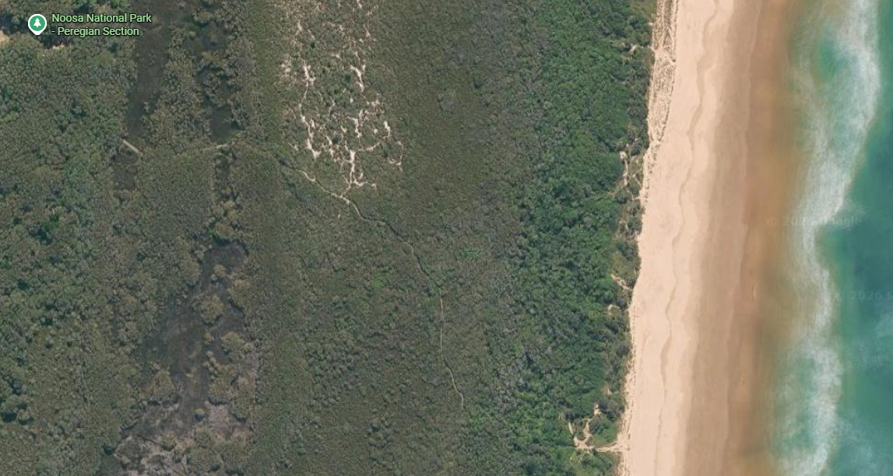
Sedge / Rush (Maybe Lepironia articulata?)¶
The open areas of the swamp with no low paper barks (deeper water, I suspect) are thickly covered with a sedge or rush
Environment¶
Dense growth of sedge or rush, leaves circular in cross section, growing in standing water of swamp behind coastal dunes. Height up to 2 metres. Maybe Lepironia articulata?
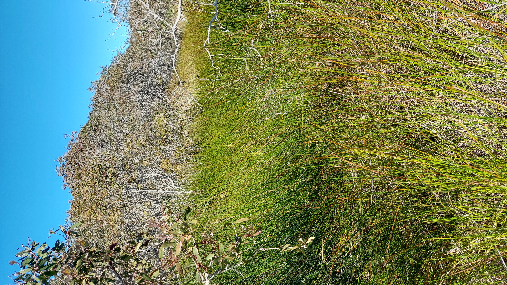
Close-up¶
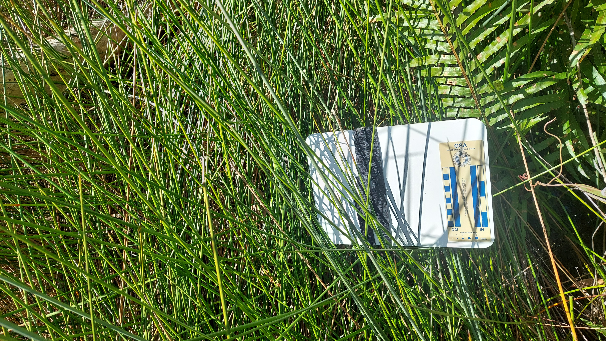
Wallum grasstree: Xanthorrhora fulva?¶
Small grass tree in low area (periodically flooded) behind coastal dunes. Maybe Wallum grasstree Xanthorrhora fulva?
Note the banksia thicket behind (I think Banksia robur - swamp banksia)
Flower spike¶
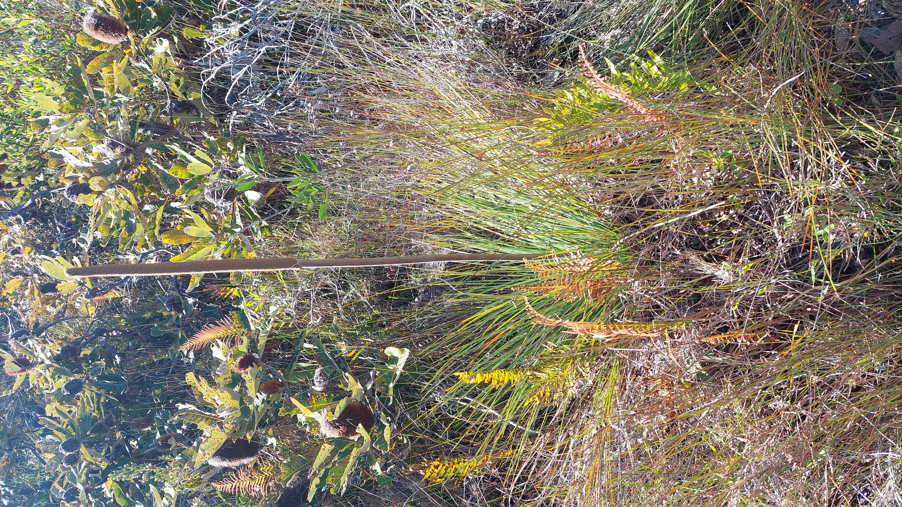
Wallum flower - Aotus lanigera?¶
Small yellow flowers on shrub to 2 metres, on track through wallum heath (periodically flooded swamp) behind coastal dunes.
Track-side shrub size¶
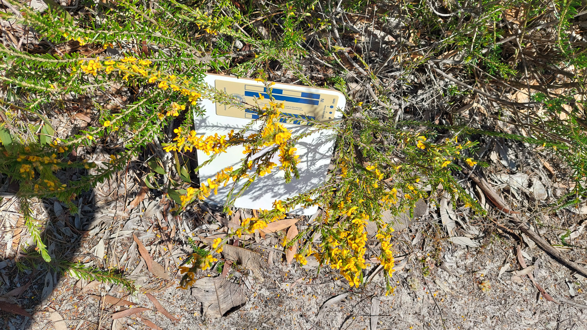
Flower close-up¶
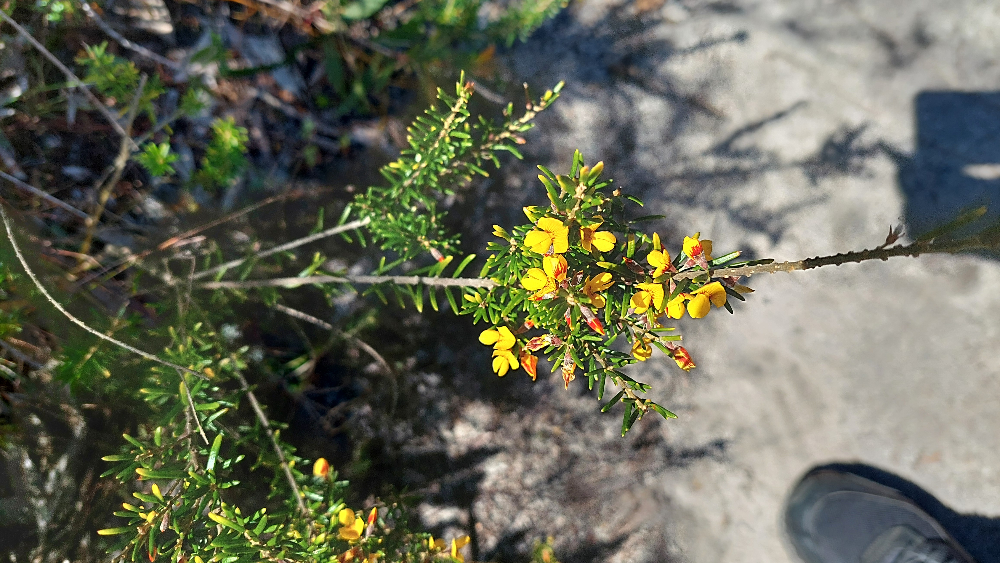
Dense thicket¶
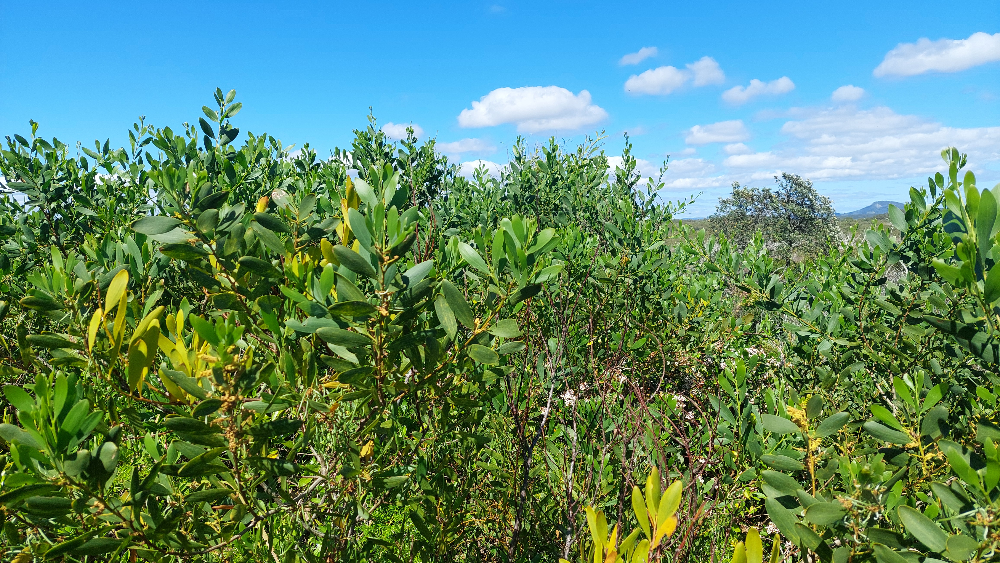
Close-up of leaves¶
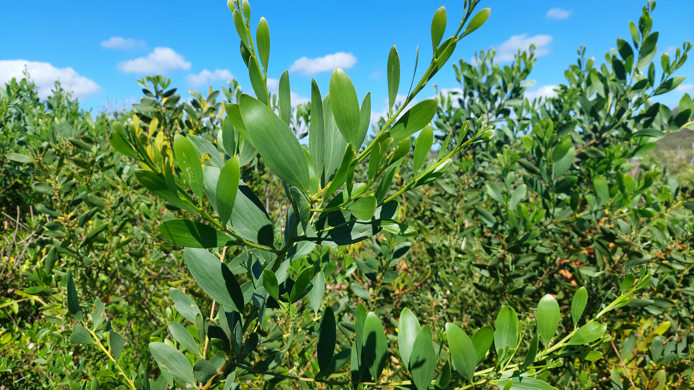
Scaevola calendulacea Dune Fan-Flower¶
I was quiet surprised to see Scaevola c. at the top of the dune, in partial shade, forming a thick mat. I usually see it lower down at the bottom of the dune-face, stabilizing the sand
Sadly, you can also see some Asparagus aethiopicus (a weed)
Close-up¶
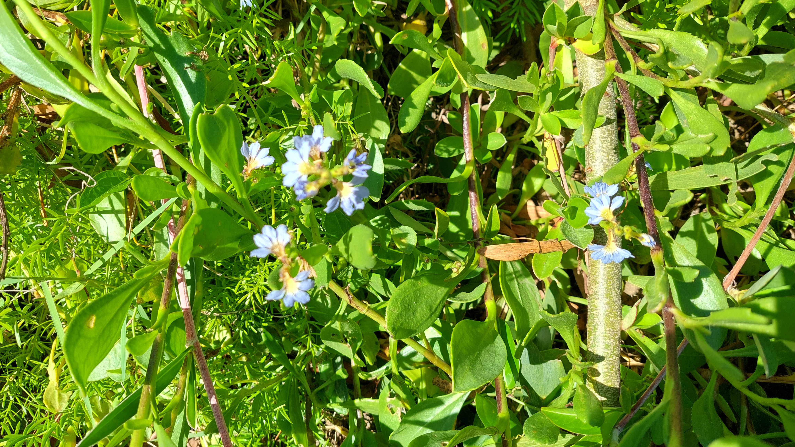
Not always plants! - Trigonospila cingulata (?)¶
I couln't resist taking a picture of a very distinctive fly on a Hibbertia scandens flower, right at the top of the coastal dune
Close-up¶
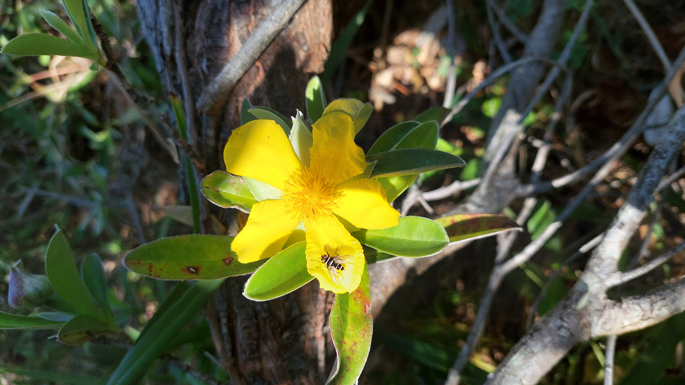
Close-up¶
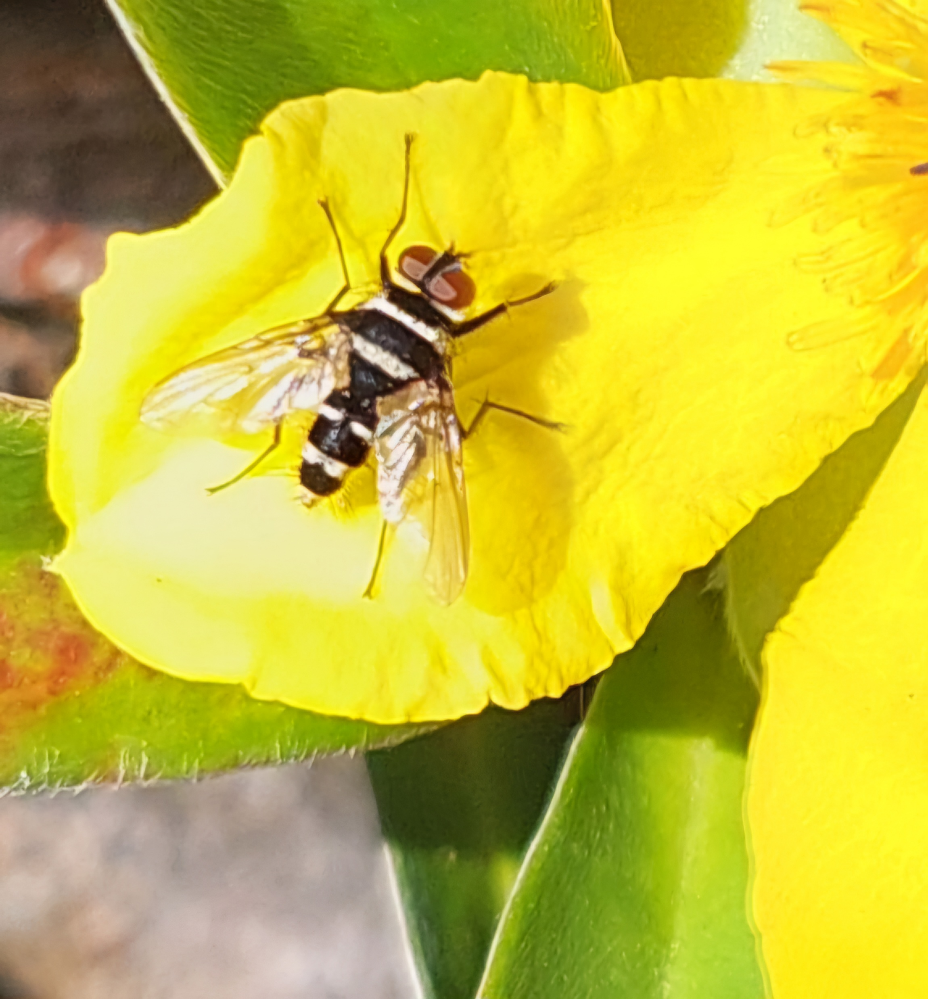
More to come!¶
I will continue to update this web page, as I learn the names of more native vegetation species